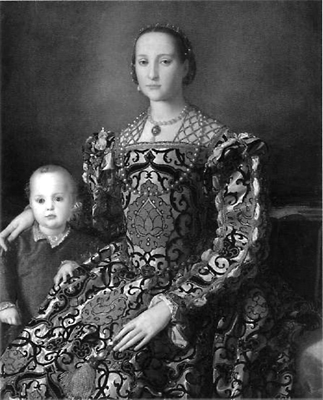
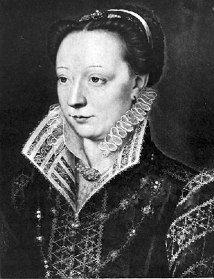

Mediciler, 13. ve 17. yüzyıllar arasında Floransa’da hüküm sürmüş güçlü bir aileydi. Üç papa (X. Leo, VII. Clement ve XI. Leo), çok sayıda Floransa hükümdarı ve Fransa kraliyet mensubu çıkarmış bu sülale, aynı zamanda İtalya’daki Rönesans akımını da derinden etkilemişti. Lakin Mediciler’den biri vardı ki şöhretiyle hepsini bastıracaktı: Catherine.
Catherine de Medici 1519’da Floransa’da doğdu. Babası Urbino Dükü Lorenzo, annesi Madeleine de la Tour d’Auvergne’ydi. Doğumundan kısa bir süre sonra anne ve babasını kaybeden Catherine, kendini bir anda Medici ailesinin bütün mirasının tek varisi olarak buldu. Ailesinin ölümünden sonra onunla ilgilenecek tek bir yakını kalmamıştı. Babasının uzaktan akrabası Kardinal Giulio de Medici Floransa’ya geldi ve kentin yönetimini ele aldı. Küçük Catherine ile artık o ilgilenecekti.
Catherine 8 yaşındayken, Mediciler’in kaldığı saray, Floransa’nın kızgın ve fakir halkının saldırısına uğradı. Catherine ve yakınlarına saraydan kaçmaktan başka çare kalmamıştı; ancak isyan liderleri, küçük kızın geride bırakılmasını istediler. Niyetleri, gelecekte kullanabilecekleri değerli bir rehineye sahip olmaktı. Rehin alınan Catherine, kentin değişik yerlerinde ve manastırlarda yaşadı, eğitim gördü. Küçük kız bu sayede zamanın en iyi yetişmiş kadınlarından biri olacaktı.
Floransa isyanı nihayet, daha sonraları Papa VII. Clement olarak anılacak olan Giulio de Medici tarafından bastırıldı. Catherine, Giulio ile ikamet etmesi için Roma’ya gönderildi. Bu dönemde artık büyümüş olan Catherine’i evlendirme planları yapıldı. Papa Clement ve Fransa Kralı I. Francis, Catherine’in kralın en büyük oğlu Henry ile evlenmesine karar verdiler. Henüz 14 yaşında olan Catherine’e fikrini soran olmamıştı tabii. Dönemin ruhuna uygun ‘siyasi evliliklerinden’ birinin aktrisi olmak üzereydi Catherine. Yine de küçük yaşına rağmen, etrafını dikkatle süzüyor, eşiğinde dolaştığı iktidarın kokusunu net olarak alabiliyordu. Kendi deyimiyle ‘minyon ve incecik bir yapıya, sarı saçlara, zayıf ve tatlı olmayan bir yüze, fakat bütün Mediciler’e özgü gözlere sahip’ bir kızdı.
Saraydakileri nasıl etkiledi?
Evlilik merasimleri için Fransa’daki saraya gelişi, zamanın en muazzam kutlamalarından birine sahne olacaktı. Catherine, Fransız monarşisi üzerinde büyük bir etki bırakmak istiyordu. Kısa boylu ve zayıf olmasına rağmen, saraya olağanüstü bir giriş yapmayı planlamıştı. Emri altındaki sanatçılardan aldığı bir tavsiye ile zamanın ilk yüksek ökçeli ayakkabısını giydi. Yüksek topuklar üzerinde salına salına yürüyüşü ve kendine has tarzıyla istediğini almıştı; herkes onu konuşuyordu.
Henry ile evliliğinin ardından yolculuklar yapan Catherine, Fransa’nın büyük kısmını gördü. Burada hiç arkadaşı yoktu. Kendisini ‘İtalyan kadın’ olarak isimlendiren Fransız soylularıyla arasında sürekli bir mesafe vardı.
Kral Francis’in en büyük oğlu Dauphin 1536’da ölünce Henry, Fransa tahtının varisi oldu. Bu durum, Fransa’nın her yanında huzursuzluklara yol açtı. Pek çok Fransız, bir İtalyan’ın kraliçeleri olmasını kabullenemiyordu. Herkes, Catherine’in bir şeyleri yanlış yapmasını ve Fransa tahtından uzaklaştırılmasını umuyordu. Catherine asla tahta varis olacak bir çocuk doğurmamalı ve kraliçeliği mümkün olduğu kadar kısa sürmeliydi. Ancak Catherine, 1543-1555 yılları arasında, üçü bebek iken ölen on çocuk doğurdu. Oğullarından Francis, Charles ve Henry, daha sonra Fransa Kralı olarak taç giyeceklerdi.
Catherine’in aziz kayınpederi I. Francis 1547’de öldü. Böylece 14 yıllık eşi, ‘Fransa Kralı II. Henry’ unvanını elde etti. Catherine artık sınırsız gücü olan bir kraliçeydi. Her sözü kanun olan bir kadın! Üstelik Fransız olmayan bir kadın! Catherine’in İtalyan kimliği, Fransızları daha önce hiç olmadığı kadar galeyana getirmişti. Nasıl olurdu da asil Fransız kanı taşımayan bir İtalyan kendilerini yönetebilirdi!

Fransa’nın dizginlerini eline alan bir İtalyan: Catherine de Medici
Kraliçe’nin canını sıkan, sadece asil kan düşkünü Fransızlar değildi. Evliliği de pek iyi gitmiyordu. Catherine’in kendisine olan derin aşkına rağmen Kral Henry, metresi Diane de Poitiers’e daha fazla sevgi duyuyor, vaktinin çoğunu onunla geçiriyordu. Bir de bu yetmezmiş gibi, Diane zayıf iradeli Henry’yi tamamen kontrolü altına almış, Fransa’nın yönetiminde söz sahibi olmuştu. Bu durum Catherine’i inanılmaz derecede rahatsız ediyordu; ancak hislerini kendisine saklamayı tercih edecekti.
Eşinin krallığı süresince Catherine arka planda kaldı. İlgi çekmek ve odak noktası olmak için hiçbir sebep olmadığını anlamıştı. Eşi güçlü bir kral imajı oluşturmuştu ve soylular onun iktidarında seslerini çıkartamıyorlardı. Catherine annelik rolünde mutluydu. Sabırla iktidarın kendi eline geçeceği zamanı bekliyordu. II. Henry’nin 1559’da ölümüyle işler değişecekti...
En büyük oğlu II. Francis’in tahta geçmesiyle birlikte, Catherine için hareketli günler başladı. Francis, halk nezdinde babası gibi bir imaj oluşturamamıştı. Hasta ve zayıf bir çocuktu. Francis’in zayıf yönetimi, I. Francis ve II. Henry zamanında kısıtlanan haklarını ve güçlerini geri almak isteyen soylular açısından bulunmaz bir fırsattı. Ama hesaba katmadıkları biri vardı: Catherine.
Fransa’nın dizginlerini eline alan İtalyan...
Francis’in saltanatı çok kısa sürdü. Onun ölümüyle birlikte Catherine’in henüz 10 yaşındaki ikinci çocuğu IX. Charles, krallığın başına geçti. Tabii ki bu küçücük çocuğun koca Fransa’yı idare etmesi beklenemezdi. Catherine kendisinden sakınılan Fransa’nın dizginlerini eline alıyordu. İktidarını Charles’ın ölümünden sonra, diğer oğlu III. Henry döneminde de sürdürecekti. Artık söz sahibi olan Catherine, dikkatli bir şekilde Guise Hanedanlığı’nın etkisini ortadan kaldırma ve ülkenin tek hâkimi olma planlarına başlamıştı. Enerjisini kraliyeti korumak ve Fransız askeri liderlerinden Gaspard de Coligny’nin önderliğindeki Protestan Hügonatlarla (Huguenot) güçlü Guise Hanedanlığı’nın başını çektiği Roman Katolikleri arasında denge kurmak için kullanacaktı.
Bir Roman Katolik olan Catherine, 1562’de başlayan kanlı iç savaş boyunca her ne kadar genellikle Katolikleri desteklese de denge sağlamak adına zaman zaman Hügonatlara destek vermekten de kaçınmadı. Lakin 1572’de, oğlu Kral Charles üzerinde Hügonatların hâkimiyetinin arttığını görünce, bu duruma kayıtsız kalmamaya karar verdi. Oğlunu denetim altına alırlarsa, Fransa’nın dümeni Protestanların eline geçebilirdi. İktidarın tehlikede olduğunu sezinleyen Catherine, Coligny’yi ortadan kaldırtacaktı. İddialara göre daha önce başka siyasi rakiplerine de yaptığı gibi, Coligny’yi zehirletti. Catherine, iktidarı elinde tutmak için cinayet, entrika ve zehirlerle dolu ölümcül bir mücadele yürütüyordu ve kimseye acımaya da niyeti yoktu.
Coligny’nin öldürülmesiyle ortalık karıştı ve tarihe Aziz Bartholomew Kıyımı olarak geçen olayda, bir gecede tam 50 bin Protestan kılıçtan geçirildi! Avrupa’nın soykırımlar listesinde müstesna bir yeri olan bu olayda, tüm parmaklar, Catherine’i işaret ediyordu. Tarihçiler, Kraliçe’nin, kendisi gibi bir İtalyan olan, pragmatizmin ideolojik babası Machiavelli’nin “Düşmanlarının hepsini bir darbede ortadan kaldır” şeklindeki tavsiyesini hayata geçirdiğini iddia etmişlerdi. Bu katliamın ardından mezhep savaşları iyice çığırından çıktı. Bu savaşı durduracak hamle yine ondan gelecekti...
Evlilikleri bir silah gibi kullandı...
İktidar hırsıyla gözü dönmüş bir kadın gibi görünse ya da öyle resmedilse de aslında Catherine, Makyavelist bir idareciden öte bir şey değildi. Önceliği, oğulları vasıtasıyla önemli bir parçası olduğu Fransa monarşisini ayakta tutmaya vermişti. Son çocuğu II. Henry’nin efemine eğilimlerinin farkındaydı ve asla tahta varis olacak bir evlat sahibi olamayacağını biliyordu. Ama zihninde binbir türlü oyun dönüyordu. Bir ‘harici’ olarak Fransa’ya gelmiş, monarşiye girmiş, üstelik hiç sevilmediği bir ülkede kraliçe olarak, iktidarını uzun yıllar muhafaza etmişti. Bunların hepsi kıvrak zekâsı sayesindeydi. Madem çocuklarından hayır yoktu, o halde damatlarından faydalanabilirdi!
Kızı Elizabeth’i İspanya’nın Roman Katolik Kralı II. Philip ile, diğer kızı Margaret’ı ise sonradan IV. Henry olarak Fransa Kralı tacını giyecek Navarre Kralı Protestan Henry ile evlendirmişti. Böylelikle mezhepler arasında hassas bir denge kurmaya çalışmıştı. Tahta geçmesi gerektiği zaman, Katolikliği kabul ederse, Henry’nin Fransa için iyi bir kral olacağını tahmin ediyordu; yanılmadı da. Henry tahta çıktığında, Protestanlıktan Katolikliğe geçti ve dini özgürlükleri garanti altına alan düzenlemelerle, 30 yıl boyunca ülkenin iliğini kemiğini sömüren mezhep savaşlarını sona erdirdi. Catherine’in belki de Fransa’ya yaptığı en büyük iyilik, Henry’yi monarşiye eklemlemek olmuştu. Böylelikle Fransız monarşisini bir bakıma kurtarmış oluyordu. İşte bu yüzden ileride, mutlak monarşiler (absolutism) çağının mimarlarından biri olarak anılacaktı.

Yaklaşık 40 yıl boyunca Fransa’nın gerçek hakimi o idi.
Fransız monarşisini kurtardı...
Catherine neredeyse bütün hayatını, çocuklarını kontrol altına alarak ülke üzerinde söz sahibi olmak isteyen Fransız soylularına direnerek ve Fransa’nın Katolikler ile Protestanlar arasında ikiye bölündüğü bir dönemde, monarşiyi ve ülkeyi korumaya çalışarak geçirdi. Bir biri ardına kaybettiği oğullarını güvence altına almak ve çocukları ile torunlarını Avrupa’nın en soylu ailelerinden kızlarla evlendirerek, bir istikrar ortamı sağlamak onun her zamanki önceliği olmuştu. En büyük hatası, Protestanlarla Katolikler arasındaki dini husumetin boyutlarını kavramadaki başarısızlığı olmuştu. Yine de bu pragmatik kadın, ‘gelin’ geldiği ülkenin iktidarını ele geçirmeyi, oğulları vasıtasıyla uzun yıllar hüküm sürmeyi ve kanlı mezhep çatışmalarına rağmen dengeleri uzun yıllar korumayı başardı. Bu da az şey değildi.
NOTLAR